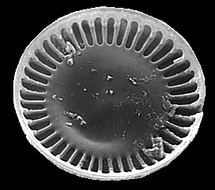
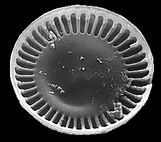
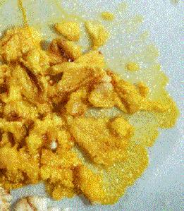

|
Figure 1. Life cycle of an unspecified organism. Image from Purves et al., Life: The Science of Biology, 4th Edition, by Sinauer Associates (www.sinauer.com) and WH Freeman (www.whfreeman.com), used with permission. |
 |
Evolution of Eukaryotes | Eukaryotic Organelles and Prokaryotic Symbionts | Classification of Protists
Kingdom Archaezoa | Kingdom Euglenozoa | Kingdom Alveolata | Algae | Kingdom Stramenopila
Kingdom Rhodophyta | Slime Molds | The Fossil Record | Links
The transition to eukaryotic cells appears to have occurred during the Proterozoic Era, about 1.2 to 1.5 billion years ago. However, recent genetic studies suggest eukaryotes diverged from prokaryotes closer to 2 billion years ago. Fossils do not yet agree with this date. The old Kingdom Protista, as I learned it long ago, thus contains some living groups that might serve as possible models for the early eukaryotes. This taxonomic kingdom has been broken into many new kingdoms, reflecting new studies and techniques that help elucidate the true phylogenetic sequence of life on Earth.
Protists exhibit a great deal of variation in their life histories (life cycles). They exhibit an alternation between diploid and haploid phases that is similar to the alternation of generations found in plants. Protist life cycles vary from diploid dominant, to haploid dominant. A generalized eukaryote life cycle is shown in Figure 1.
Figure 1. Life cycle of an unspecified
organism. Image from Purves et al.,
Life: The Science of Biology, 4th Edition, by Sinauer
Associates (www.sinauer.com)
and WH Freeman (www.whfreeman.com),
used with permission.
The great diversity of form, habitat, mode of nutrition, and life history exhibited by eukaryotes suggests they evolved several times from various groups of prokaryotes. This makes the Protista a polyphyletic group. Eukaryotes are generally larger, have a variety of membrane-bound organelles, greater internal complexity than prokaryotic cells, and has a secialized method of cell division (meiosis) that is a prelude to true sexual reproduction. Protists might be viewed as a group from which the other eukaryotic kingdoms evolved, as shown by Figure 2.
Figure 2. The "six" kingdom taxonomic
scheme. Image from Purves et al.,
Life: The Science of Biology, 4th Edition, by Sinauer
Associates (www.sinauer.com)
and WH Freeman (www.whfreeman.com),
used with permission.

Symbiosis is the interactive association of two or more species living together. There are several types of symbiosis. Parasitism is a symbiosis where one organism causes harm to the other, its host. An example of this is a disease causing bacterium, such as Treponema pallidum, which causes the disease syphilis in humans. Commensalism is a symbiosis where one organism benefits and the other is not harmed or helped. The symbiotic relationship between alge and fungi in lichens is an example of this. Mutualism is a symbiosis where both organisms benefit. Mutualism examples are abundant: zooxanthellae are dinoflagellates that live within the body of coral; E. coli bacteria live in the human intestine; etc.
The symbiotic model proposed by American biologist Lynn Margulis suggests possible symbiosis of bacteria within early eukaryotic cells. Margulis proposed the mechanism of endosymbiosis, shown in Figure 3, to explain the origin of mitochondria and chloroplasts from permanent resident prokaryotes. According to this idea, a larger prokaryote (or perhaps early eukaryote) engulfed or surrounded a smaller prokaryote some 1.5 billion to 700 million years ago.
Figure 3. Hypothesized steps in the
endosymbiosis of bacteria to produce mitochondria and/or
chloroplasts. Image from Purves et
al., Life: The Science of Biology, 4th Edition, by
Sinauer Associates (www.sinauer.com)
and WH Freeman (www.whfreeman.com),
used with permission.
Instead of digesting the smaller organisms the large one and the smaller one entered into a type of symbiosis known as mutualism, where both organisms benefit and neither is harmed. The larger organism gained excess ATP provided by the "protomitochondrion" and excess sugar provided by the "protochloroplast", while providing a stable environment and the raw materials the endosymbionts required. This has become so strong a symbiosis that eukaryotic cells cannot survive without their mitochondria (likewise photosynthetic eukaryotes cannot survive without their chloroplasts), and the endosymbionts cannot survive outside their hosts. Nearly all (but not ALL) eukaryotes have mitochondria. Mitochondrial division is remarkably similar to the prokaryotic methods that were studied in the cell division and bacterial diversity chapters.
Chloroplasts and mitochondria still retain their own DNA, and have the diversity of structure and photosynthetic pigments that supports the idea that the endosymbiosis events occurred independantly several times. The photosynthetic pigments (see Table 1) in the red, brown, golden-brown, and green algae are very different, lending support for the hypothesis of several different, independent endosymbiotic events.
Table 1. Photosynthetic pigments of monerans, algae, and plants. Prokaryote groups are shown in red, protists in blue, and vascular plants in purple.
Cyanobacteria chlorophyll a, chlorophyll c, phycocyanin,
phycoerythrin Chloroxybacteria chlorophyll a, chlorophyll b Green Algae (Chlorophyta) chlorophyll a, chlorophyll b,
carotenoids Red Algae (Rhodophyta) chlorophyll a, phycocyanin, phycoerythrin,
phycobilins Brown Algae (Phaeophyta) chlorophyll a, chloorphyll c, fucoxanthin and
other carotenoids Golden-brown Algae (Chrysophyta) chlorophyll a, chlorophyll c, fucoxanthin and
other carotenoids Dinoflagellates (Pyrrhophyta) chlorophyll a, chlorophyll c, peridinin and
other carotenoids Vascular Plants chlorophyll a, chlorophyll b,
carotenoids
The DNA, ribosomes, biochemistry, and reproduction of chloroplasts and mitochondria are remarkably bacteria-like. Some living eukaryotes, such as the "amoeba" Pelomyxa (also known as Chaos), lack mitochondria, having instead endosymbiotic bacteria that perform mitochondrial duties of ATP generation.
The protists include heterotrophs, autotrophs, and some organisms that can vary their nutritional mode depending on environmental conditions. Protists occur in freshwater, saltwater, soil, and as symbionts within other organisms. Due to this tremendous diversity, classification of the Protista is difficult.
Historically the group has been subdivied based on the mode of nutrition, photosynthestic pigments, and the type of organelles used for locomotion. For example, the organisms using cilia to propel themselves were all placed in the Phylum Ciliata; those using pseudopodia were all in the Phylum Sarcodina. This is an example of form classification, and worked well enough until scientists began to examine the protists both biochemically and ultratsructurally (with electron microscopes). They discovered the form classification mentioned above did not support the existence of monophyletic groups, and thus should be abandoned. Several new kingdoms have been proposed for the old protista, although consensus amongst systematists working with these groups has yet to fully emerge. Several organisms once placed in the protists have been moved to other Kingdoms, while others have moved from the Kingdom Fungi to the protists.
Organisms placed in this proposed kingdom lack mitochondria. Scientists interpret this as an indication of the divergence of this group from other "protists" prior to the endosymbiosis event that led to the development of the mitochondrion. However, some recent studies seem to indicate that some of the organisms placed in this group are secondarily mitochondrialess: their ancestors had mitochondria but lost them over time. This casts doubt on the monophyletic nature of this proposed kingdom.
Members of the diplomonad subgroup of archaezoans have two flagella, two nuclei, and no mitochondria. Giardia lamblia, an intestinal parasite that causes giardiasis, is a member of this group. A colorized scanning electron migrograph of this organism is shown in Figure 4.
Figure 4. Giardia lamblia, a human
parasite of the gastrointestinal tract. This image is
copyright Dennis Kunkel at www.DennisKunkel.com,
used with permission.

This proposed kingdom includes protists with one or two flagella emerging from an anterior pocket, and paramylum (a glucose polymer) as the storage product for sugars. Some members of this group are are autotrophic, while others are heterotrophic.
Organisms in the Euglenophyta have two flagella, a contractile vacuole, a photoreceptive eyespot, several chloroplasts, lack a cell wall, and can live as either autotrophs or heterotrophs. Some autotrophic species of Euglena, such as the one shown in Figure 5, become heterotrophic when light levels are low. Their chloroplasts are surrounded by three rather than the more typical two membranes. Euglenoid chloroplasts resemble those of green algae, and are probably derived from the green algae through endosymbiosis. However, the euglenoid pyrenoid produces an unusual type of carbohydrate polymer (paramylum) not seen in green algae.
Figure 5. The structure of
Euglena, a flagellated protistan.
Image from Purves et al., Life: The
Science of Biology, 4th Edition, by Sinauer Associates
(www.sinauer.com)
and WH Freeman (www.whfreeman.com),
used with permission.
Euglenoids lack cell walls. In its place, however, is a flexible pellicle composed of protein strips side. Euglenoids also have a contractile vacuole, like many other protists, for eliminating excess water. Euglenoids reproduce by longitudinal cell division, and sexual reproduction is not known to occur.
The other group within the Euglenozoa is the kinetoplastids. All members of this group are symbiotic, with some being parasitic. Trypanosoma is a kinetoplastid. Trypanosoma brucei is a trypanosome transmitted by the bite of the tsetse fly; it is the cause of African sleeping sickness.
The kingdom Alveolata was only recently recognized. The synapomorphy of this clade is the presence of small saccules (alveoli) below the cell membrane surface. Major groups in this kingdom are the ciliates, dinoflagellates and apicomplexans (a group of parasites that cause malaria and other diseases).
The phylum Ciliophora contains about 8,000 species of ciliates. Ciliates move by coordinated strokes of hundreds of cilia projecting through tiny holes in a semirigid pellicle. They discharge long, barbed trichocysts for defense and for capturing prey; toxicysts release a poison.
Ciliates are complex, heterotrophic protozoans that lack cell walls and use multiple small cilia for locomotion. To increase strength of the cell boundary, ciliates have a pellicle, a sort of tougher membrane that still allows them to change shape. Most of the 8000 species are freshwater. Most ciliates have two nuclei: a macronucleus that contains hundreds of copies of the genome and controls metabolisms, and a single small micronucleus that contains a single copy of the genome and functions in sexual reproduction. Paramecium is a common ciliate seen by students in introductory biology classes, and is shown in Figures 6 and 7.
Figure 6. Structure of Paramecium,
a typical ciliate. Image from Purves et al., Life: The
Science of Biology, 4th Edition, by Sinauer Associates
(www.sinauer.com)
and WH Freeman (www.whfreeman.com),
used with permission. Figure 7. Paramecium
multimicronucleatum - Ciliated Protozoan (SEM x1,600).
This image is copyright Dennis Kunkel at www.DennisKunkel.com,
used with permission.
Since ciliates (an many freshwater protozoans) are hypotonic, removal of water crossing the cell membrane by osmosis is a significant problem. One commonly employed mechanism is a contractile vacuole, shown in Figure 8. Water is collected into the central ring of the vacuole and actively transported from the cell.
Figure 8. Functioning of a contractile
vacuole in Paramecium. Image
from Purves et al., Life: The Science of Biology, 4th
Edition, by Sinauer Associates (www.sinauer.com)
and WH Freeman (www.whfreeman.com),
used with permission.
Food is taken into the cell by an oral groove (or gullet, as shown in Figure 9), where small particles of the food are phagocytosed into food vacuoles. Often this can be accomplished in the laboratory period by using yeast stained with congo red dye, allowing students to see food vacuoles forming. The food vacuoles travel through the cytoplasm and are digested, with the molecules eventually passing into the cytoplasm, and wastes being expelled from the cell by exocytosis.
Figure 9. The formation and processing of
food vacuoles by Paramecium.
Image from Purves et al., Life: The
Science of Biology, 4th Edition, by Sinauer Associates
(www.sinauer.com)
and WH Freeman (www.whfreeman.com),
used with permission.
Ciliates travel along a spiral path, as shown in Figure 10., with the cell rotating along its long axis and the direction of travel resembling a sine wave.
Figure 10. The motion of
Paramecium. Image from Purves
et al., Life: The Science of Biology, 4th Edition, by
Sinauer Associates (www.sinauer.com)
and WH Freeman (www.whfreeman.com),
used with permission.
During asexual reproduction, ciliates divide by transverse binary fission, as shown in Figure 11. You may recall that bacteria have a somewhat similar type of binary fission, although no nuclei occur in bacteria.
Figure 11. Binary fission in
Paramecium. Image from http://biodidac.bio.uottawa.ca/thumbnails/filedet.htm?File_name=OLIH023P&File_type=GIF.
Ciliates possess two types of nuclei---a large macronucleus and one or more small micronuclei. The macronucleus controls the normal metabolism of the cell. The micronucleus are involved in sexual reproduction in a process known as conjugation that is shown in Figure 12. The macronucleus disintegrates and the micronucleus undergoes meiosis. Two ciliates then exchange a haploid micronucleus.The micronuclei give rise to a new macronucleus containing certain housekeeping genes.
Figure 12. Conjugation in
Paramecium. Image from http://biodidac.bio.uottawa.ca/thumbnails/filedet.htm?File_name=OLIH020P&File_type=GIF.
Paramecium is by no means the only ciliate, merely one of the most common ones students will encounter during a laboratory session. Other ciliates include:
Figure 13. Top: Blepharisma, with prey
in a food vacuole, Image from http://biodidac.bio.uottawa.ca/Thumbnails/showimage.cfm?File_name=POLH012P&File_type=GIF;
Middle: Stentor, image from http://www.ucmp.berkeley.edu/protista/ciliata/stentor.jpg;
Bottom: Vorticella, SEM x340, image copyright Dennis
Kunkel at www.DennisKunkel.com,
used with permission.
The phylum Pyrrophyta contains about 1,000 species of dinoflagellates, two members of which are shown in Figure 14. Members of this group have cell walls and store excess sugar as starch. These organisms are surrounded by protective cellulose plates. Some dinoflagellates also are "armored", having numerous plates that cover the cell. Ornamentation on these plates can be quite beautiful.
Most dinoflagellates have two flagella; one lies in a longitudinal groove and acts as a rudder, the other is located within a transverse groove and its beating causes the cell to spin as it moves forward.
Figure 14. Top: Scanning electron
micrograph of Peridinium.
This image of is from http://megasun.bch.umontreal.ca/protists/peri/peri.sem2.lab.gif.;
Bottom: Dinoflagellate, Peridinium sp. (SEM
x3,500). This image is copyright
Dennis Kunkel at www.DennisKunkel.com,
used with permission.
Most dinoflagellates are autotropic, having chlorophyll a, chlorophyll c in their chloroplasts, as well as a unique pigment peridinin, and some carotenoid pigments. Not all dinoflagellates are authotrophs, some are heterotrophic. Dinoflagellates can be extremely numerous, with concentrations being measured up to 30,000 individuals per cubic millimeter. Dinoflagellates are therefore an important source of food in certain ecosystems.
Certain dinoflagellates live symbiotically inside corals, and are known as zooxanthellae. The coral animal provides a sheltered space, while the dinoflagellate provides food and oxygen to its host. Zoxanthellae are the small golden brown "dots" in the coral animals pictured in Figure 15.
Figure 15. Zooxanthellae in a coral.
Image from http://www.biology.lsa.umich.edu/courses/bio255/zooxanthellae.jpg

Cell division in dinoflagellates differs from most protistans, with chromosomes attaching to the nuclear envelope and being pulled apart as the nuclear envelope stretches. During cell division in most other eukaryotes, the nuclear envelope dissolves during Prophase and reforms during Telophase.
Red tides are oceanic phenomena caused by population explosions of certain types of dinoflagellates that release a neurotoxin into the environment after they die. Shellfish concentrate this toxin into a high enough dose that it can kill people who have eaten the contaminated shellfish. Woods Hole Oceanographic Institute maintains a nice page describing What are Harmful Algal Blooms (HABs)?
Figure 16. Top: Red tides are population
explosions (or blooms) of dinoflagellates.
This image is from http://www.redtide.whoi.edu/hab/rtphotos/noctiluca.jpg;
Bottom: The dinoflagellates from this bloom.
Image is from http://www.redtide.whoi.edu/hab/rtphotos/dinophysis.jpg.
Fish kills have been linked to the dinoflagellate Pfiesteria. This organism does not release neurotoxins into the environment ala a red tide, but rather seesm to swarm onto fish. The lesions thus formed by the predation by the plethora of attacking Pfiesteria, result in the death of the fish. In certain areas of the U.S. east coast outbreaks of this organism (and other related forms) have resulted in mass fish kills.
The fossil record of dinoflagellates is excellent, with most palynologists accepting fossils from the Triassic as representing some stage of the dinoflagellate life history. The oldest fossil that might be a dinoflagellate cyst is Arpylorus antiquus, from the Silurian-aged rocks. A group of microfossils that may in part be dinoflagellate cysts are the hystrichospherids, some of which date from the precambrian. Acritarchs, an abundant group of precambrian and Paleozoic microfossils, may also in part be dinoflagellates or might also represent some other group of algae.
This group consists of parasitic organisms united by their possession of a unique apical complex of microtubules. Many of the organisms now placed in this group were classified in the old Phylum Sporozoa. As a group, they have complex life cycles with diverse forms at different stages.
Members of this group cause malaria and toxoplasmosis. The life history of each organism has it infecting a different host for part of its growth. Toxoplasmosis is transmitted from cats to humans, with between 7 and 72% of the population infected, depending on the geographic area.
Malaria is a disease that effects an estimated 300 million people woreldwide. Therer are several organisms that cause malaria. most of which are spread by mosquitoes, transfusions, and shared hypodermic needles. Control of mosquito populations has led to declines in malaria in many areas. Infected individuals can be treated with a variety of medicines. However, some of the organisms that cause malaria heve developed immunity to some of the more commonly employed medicines.
Plasmodium vivax, the cause of one type of malaria., is the most widespread human parasite. If a person is bitten by a female Anopheles mosquito, the parasite eventually invades the person's red blood cells, as shown in Figure 17. Chills and fever appear when red blood cells burst and release toxin into the person's blood.
Figure 17. The malarial parasite's life
cycle. Images from Purves et al., Life: The Science of
Biology, 4th Edition, by Sinauer Associates
(www.sinauer.com)
and WH Freeman (www.whfreeman.com),
used with permission.
The amoeboids are in the phylum Sarcodina, which includes approximately 40,000 species. They engulf their prey with pseudopods, cytoplasmic extensions formed as cytoplasm streams in one direction. Traditional;ly this group has included the amoebas, foraminifera, and radiolaria; some of which have been removed to other groups due to recent studies.
Many amoeboids have shells, as do the foraminifera and radiolaria. Amoeba proteus, shown in Figure 18, is a commonly studied member. When amoeboids feed, they phagocytize their food; the pseudopods surround and engulf a prey item. Digestion then occurs within a food vacuole. Freshwater amoeboids, including Amoeba proteus, have contractile vacuoles used to eliminate excess water.
Entamoeba hystolitica is an intestinal parasite in humans that causes amoebic dysentery (also known as Montezuma's Revenge or the Aztec Two-step). It is present in the water supply of many communities in Mexico (and other countries), and unless specifically filtered, toxins from this amoeba will cause a disease that can ruin a vacation. Over time, your body will acclimate to the toxins, but since many of us only are exposed for short times, our bodies will not be able to cope. Drinking filtered water should prevent contacting this illness. The Bad Bug Book website has a description of this illness.
Amoeba moves by extensions of their cytoplasm known as pseudopodia. Pseudopodia, shown in Figure 18, are used by many cells, and are not fixed structures like flagella but rather are associated with actin near the moving edge of the cytoplasm.
Figure 18. Formation of pseudopodium by
an amoeba. Image from Purves et al.,
Life: The Science of Biology, 4th Edition, by Sinauer
Associates (www.sinauer.com)
and WH Freeman (www.whfreeman.com),
used with permission.
Foraminifera (forams) are protists that live in the oceans and secrete a shell (also known as a test) composed of silica or calcium carbonate. The cytoplasm of formals extends out from under the shell. Thus, the fossil record of forams is quite good. Oxygen isotope data from forams has been used to calculate ocean temperature fluctuations over the past 100,000 years.
Figure 19. Top: These images of recent
forams are from http://www.cs.uwindsor.ca/meta-index/fossils/forams/gsls/ss-master-fsurface.html.
Ammodiscus catinus (L), Globigerina bulloides
(R); Bottom: Foraminiferan Test, Ephidium sp. (SEM
x770). This image is copyright Dennis
Kunkel at www.DennisKunkel.com,
used with permission.
Algae are a polyphyletic group (therefore lacking any formal taxonomic validity, but still a useful term) that includes several smaller monophytletic groups. The fossil record of algae dates to the precambrian time (possible algae have been recovered from the Bitter Springs Formation rocks dated to between 1.2 and 1.4 billion years old), with undeniable algae appearing during the Paleozoic Era, by about 500 million years ago.
Most algae use photosynthesis at least part of the time. Algae are subdivided by their type of wall, photosynthetic pigments, and method of food storage. Photosynthetic pigments and storage of sugars are quite diverse within the algae. Algae are major components of the phytoplankton, an important source of oxygen and the base of many food webs in the oceans and freshwater. Body styles range from single-celled to colonial (possibly simple multicellular).
This proposed kingdom includes the diatoms, golden algae, brown algae, and water molds. All members of this kingdom have numerous hair-like projections from their flagellae. The monophyletic nature of this group has been established by molecular systematic methods. When they are photosynthetic, chlorophyll c is the main accessory pigment. This kingdom includes diatoms, giant kelps, and mildews, making it a very diverse group both in terms of lifestyle as well as the size iof organisms.
This group of freshwater, marine, and terrestrial algae includes the golden algae. Although most members of this group are autotrophs, the vast majority of them can become heterotrophs when light levels are low. Food is stored as oils, and photosynthetic pigments include chlorophyll a and c and yellow carotenoid pigments.
This phylum includes several distinct groups, some of which may be removed to other phyla in the future, such as the silicoflagellates and yellow-green algae.
Some classifications include this phylum in the chrysophytes. Diatoms are the most numerous unicellular algae in the oceans. They are extremely numerous and an important source of food and O2 for heterotrophs in aquatic systems. Examples of the various types of diatoms are shown in Figure 20. Diatoms have a cell wall comnprised of two halves technically referred to as valves. These valves are mostly made of silica (SiO2). The diatom cell wall is perforated by numerous small openings. When diatoms reproduce asexually, each received one old valve. The new valve fits inside the old one; therefore, the new diatom is smaller than the original one. Once the shells reach a certain size the diatom reproduces sexually and restores its size, allowing the asexual reproduction cycle to begin anew.
Diatoms secrete a silicon dioxide shell (called a frustule) that forms the fossil deposits known as diatomaceous earth, which is used in filters and as abrasives in polishing compounds. Diatoms divide into two groups,the pennaleans with bilateral symmetry and elongated shape, and another, the centraleans, with radial symmetry and a rotund shape. Certain diatoms also are important indicators of water quality, while others are useful fossils for age-dating Quaternary deposits.
|
Figure 20. Diatoms. Top row: Scanning electron micrographs of a pennalean (left) and centralean (right) diatom. These images are from http://WWW.bgsu.edu/departments/biology/algae/index.html; Second Row: Differential interference contrast (DIC) image of Epithemia smithii, a pennalean diatom, shows the numerous openings in the silica frustule. Image is modified from http://www.umich.edu/~phytolab/GreatLakesDiatomHomePage/Epithemia/Epithemiasmithii/Epithemiasmithii.html; Third Row: Centric Diatom Silica Skeleton (SEM x7,220). This image is copyright Dennis Kunkel at www.DennisKunkel.com, used with permission; Fourth Row: Saltwater Pennate Diatom Frustule (SEM x4,800). This image is copyright Dennis Kunkel at www.DennisKunkel.com, used with permission. |
   |
|
|
|
|
|
|
The phylum Phaeophyta, commonly referred to as the brown algae, are a group that is entirely multicellular. All of its members also have the accessory pigment fucoxanthin (a brown pigment that gives the group its name) and stored sugar as the carbohydrate laminarin. The chloroplasts contain both chlorophylls a and c . Members of the group include the giant kelp that can be over 100 meters long. Brown algae are used in foods, animal feeds, and fertilizers and as a source for alginate, a chemical emulsifier added to ice cream, salad dressing, and candy. Brown algae also provide food and habitat for marine organisms, as witnessed by the great biodiversity found among the kelp "forests" off the California coast.
Fucus is a brown alga differentiated into a floating "blade", flotation bladder, stalk (or stipe) and basal holdfast. Sargassum, common in the Sargasso Sea region of the Atlantic Ocean, floats and maintains position by a flotation bladder filled with gas. Laminaria is a kelp found in the intertidal zone. It is unique among protists because it has tissue differentiation.
Figure 21. Brown algae. Left:
Fucus from http://www.ucmp.berkeley.edu/chromista/phaeophyta.html;
Right: Nereocystis is from http://www.sonoma.edu/biology/algae/Brown.html.

The phylum Oomycota includes the water molds with about 580 species. As indicated by the name, once this group was considered to belong to the fungi. Aquatic water molds parasitize fishes, forming furry growths on their gills. Some terrestrial water molds parasitize insects and plants; water mold was responsible for Irish potato famine. The body of water molds is filamentous, although cell walls are largely composed of cellulose (fungi have chitin in their cell walls). During asexual reproduction, they produce diploid motile spores (2n zoospores; most fungi lack motile spores). Unlike fungi, the adult phase of the life cycle is diploid, producing gametes by meiosis. Eggs are produced in enlarged structures known as oogonia.
The Irish potato famine was a terrible disaster caused by a water mold, Phytophthora infestans. This scourge is an example of the impact that a disease can have on the political, economic and social structure of several countries. The potato is a crop imported from South America. The potato was planted in Ireland, and the population of Ireland exploded from 4.5 million in 1800 to about 8 million in 1845. Most of the Irish were dependent on the potato for their food for ten months of the year. The late blight of potato thus had a very serious consequence to the Irish: famine and starvation. Between 1845 and 1860 over one million Irish died as a result of the famine brought about by the blight. During the same timespan, another 1.5 million emigrated, mostly to the east coast of the United States. Among immigrants during this time were ancestors of Presidents Kennedy and Reagan, among many others.
The red algae are placed in their own kingdom, the Rhodophyta, consisting of about 4,000 species. They are chiefly marine, multicellular organisms that are, as a rule, smaller and more delicate that the brown algae. Some are filamentous, but most are branched, having a feathery, flat, or ribbonlike appearance. Sexual reproduction involves oogamy, although the sperm are not flagellated. The food reserve is floridean starch, a polysaccharide that resembles glycogen.
Red algae have large amounts of the red pigment phycoerythrin (seen in Figure 22), and range from unicellular to multicellular in their body plans (sometimes attaining greater than one meter in length). Red algae are thought to have originated by symbiosis of cyanobacteria (which also have phycoerythrin).
Some red algae, the coralline algae, are important contributors to tropical reefs. Mucilaginous material in cell walls is source of agar used to make drug capsules, dental impressions, and cosmetics. Agar is also a major microbiological media, and when purified, is a gel for electrophoresis. Agar is also used in food preparation to keep baked goods from drying and to set jellies, and desserts. Carrageenan is an additive to puddings and ice creams; dried sheets of red algae are used in some Japanese dishes.
Figure 22. Red algae. Left: a piece of
the red alga Erythrophyllum delesseriodes, image from
http://www.sonoma.edu/biology/algae/Erythrophyllum.html;
Right: Microcladia coulteri, image from
http://www.sonoma.edu/biology/algae/Microcladia.html.
What I grew up referring to as the green algae is not a real taxonomic group: it is a paraphyletic group in need to separation. There seem to be two main lineages within the traditional green algae, and these may turn out to make good monophyletic groups in future systematic revisions of the green algae. Some of the traditional green algae should remain in the Chlorophyta, while others that are allied with plants should be removed to the Plant Kingdom. Pending such a revision, I will present the green algae as if they were in fact monophyletic, but with full realization they are not. Confused? Me too!
Green algae have cellulose cell walls, both chlorophylls a and b, and store excess sugar as starch. Some mebers of this group have been considered the undoubted ancestors of plants. Not all members of this group are allied to the plants, however. Body types in the green algae include unicellular to colonial as well as simple multicelluar. We will examine several of these representative groups.
Chlamydomonas, shown in Figure 23, and similar cells appear to be a starting point within this group. Autotrophic, unicellular forms with a single, cup-shaped chloroplast and two apically inserted flagella, these small cells also possess a contractile vacuole and pyrenoid. Excess sugars are stored as starch surrounding the pyrenoid.
Figure 23. Chlamydomonas, a
unicelled, biflagellated green alga.
This image is from http://megasun.bch.umontreal.ca/protists/chlamy/chlamy21.lab.gif.
Chlamydomonas reproduces sexually when growth conditions are unfavorable, a common process employed by many protists to withstand or outlast a deteriorating environment. Gametes from two different mating types (since this organism is typically isogamous we cannot use the terms male and female) come into contact and join to form a diploid zygote. A heavy wall forms around the zygote, in effect turning the diploid zygote into a resistant zygospore that can survive until conditions become favorable once again.
Multicellular green algae have some division of labor, producing various reproductive cells and structures. Ulva, the sea lettuce illyustrated in Figure 24, exhibits alternation of generations, producing free-living gametophyte and sporophyte forms. The common sea lettuce is usually haploid (the gametophyte) and reproduces asexually. Gametes are produced by mitosis, fuse, and produce a diploid zygote. The 2n zygote germinates and grows to become the sporophyte. Meiosis occurs in certain of the cells in the sporophyte, producing haploid swimming spores that will settle to the ocean floor and produce the next generation haploid gametophyte stage.
Figure 24. Life
cycle of Ulva, a multicelled green alga.
Image from Purves et al., Life: The
Science of Biology, 4th Edition, by Sinauer Associates
(www.sinauer.com)
and WH Freeman (www.whfreeman.com),
used with permission.
Filametous algae produce gametes by mitosis within one cell of the filament. Reproduction of this type of green algae is shown in Figure 25. These gametes are released, fuse to form a diploid zygote that soon undergoes meiosis to produce hapoid zoospores that swim, rest on the sea floor and develop into the next generation gametophyte phase.
Figure 25. Life cycle of a filamentous
green alga. Image from Purves et al.,
Life: The Science of Biology, 4th Edition, by Sinauer
Associates (www.sinauer.com)
and WH Freeman (www.whfreeman.com),
used with permission.
A Volvox colony is an example of a colonial algae. Each Volvox is a hollow sphere with thousands of cells arranged in a single layer on its perimeter. Individual Volvox cells resemble a Chlamydomonas cell. A new colony arises as if daughter cells fail to separate.
Slime molds are often classified as fungi, although now most specialists consider them a group of protistans. In fact, slime molds do not forma monophyletic group, and will have to be subdivided in some future classification scheme. Slime molds are not closely related to other groups of plants or animals. Slime molds, which spend part of their life as single-celled forms, can aggregate to form multicellular forms. They thus may represent a transition between unicellular and multicelluar forms, the second major advancement after the evolution of eukaryotic cells. Figure 26 illustrates some of the stages of a plasmodial life history.
Figure 26. Physarum, a plasmodial
slime mold. Image (L) of is from http://www.ucmp.berkeley.edu/protista/slimemolds.html.
Image of sporangia of Physarum (R or B) is from
gopher://wiscinfo.wisc.edu:2070/I9/.image/.bot/.332/Slime_molds_M_Ac_sl_so/SLime-PH_Physarumsporangia. 
The first protist fossils occur in rocks approximately 1.2-1.4 billion years old from the Bitter Springs Formation in Australia. However, some paleobiologists doubt that these small (a mere 5 micrometers in diameter) cells are actually eukaryotic. An older group of eukaryotic microfossils (perhaps dating back as far as 1.8 billion years ago) are the acritarchs. Many "algae" produce resting cysts that resemble acritarchs. Multicellular protists appeared in the fossil record more than 600 million years ago. Some problemmatic fossils, thought by some paleobotanists to be algae, have been found in rocks approximately one billion years old.
|
Acritarchs |
contractile vacuole |
||||
|
diplomonads |
giardiasis |
||||
|
Kingdom Alveolata |
Kingdom Archaezoa |
Kingdom Euglenozoa |
Kingdom Protista |
Kingdom Rhodophyta |
Kingdom Stramenopila |
|
life histories or life cycles |
malaria |
||||
|
monophyletic groups |
Myxomycota |
paramylum |
|||
|
peridinin |
Phylum Apicomplexa |
Phylum Bacillarophyta |
Phylum Chrysophyta |
Phylum Ciliophora |
Phylum Euglenophyta |
|
Phylum Kinetoplastida |
Phylum Oomycota |
Phylum Phaeophyta |
Phylum Pyrrophyta |
Phylum Sarcodina |
|
|
polyphyletic group |
pseudopodia |
radiolaria |
|||
|
toxoplasmosis |
zooxanthellae |
All text contents ©1995, 1999, 2000, 2001, 2002, 2003, by
M.J. Farabee. Use for educational purposes is encouraged.
Email: mj.farabee@emcmail.maricopa.edu
Last modified:
The URL of this page is:
{kind=link}
{kind=link}
{kind=link}
{kind=link}
{kind=link}
{kind=link}